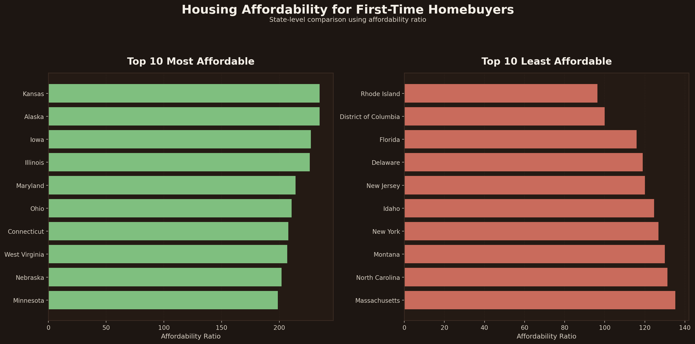

Business Analysis
Housing Affordability for First-Time Homebuyers Across U.S. States
A state-level analysis that combines median household income, FHFA housing data, and recent home price growth to evaluate where first-time homeownership appears more or less affordable across the United States.
This project focuses on using multiple indicators together instead of relying on home prices alone, helping create a clearer picture of affordability patterns and how they may affect decision-making.